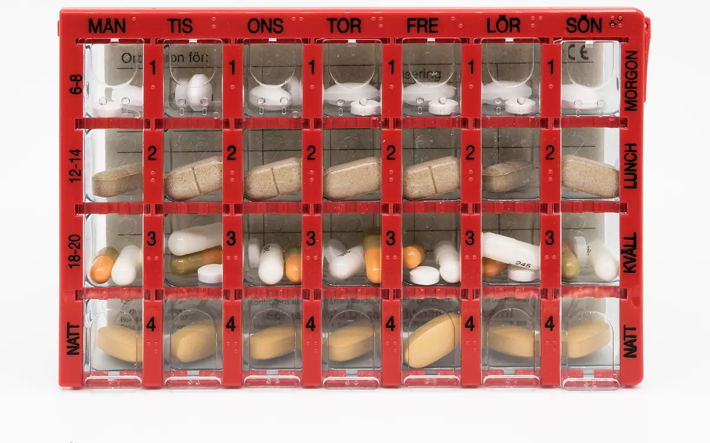
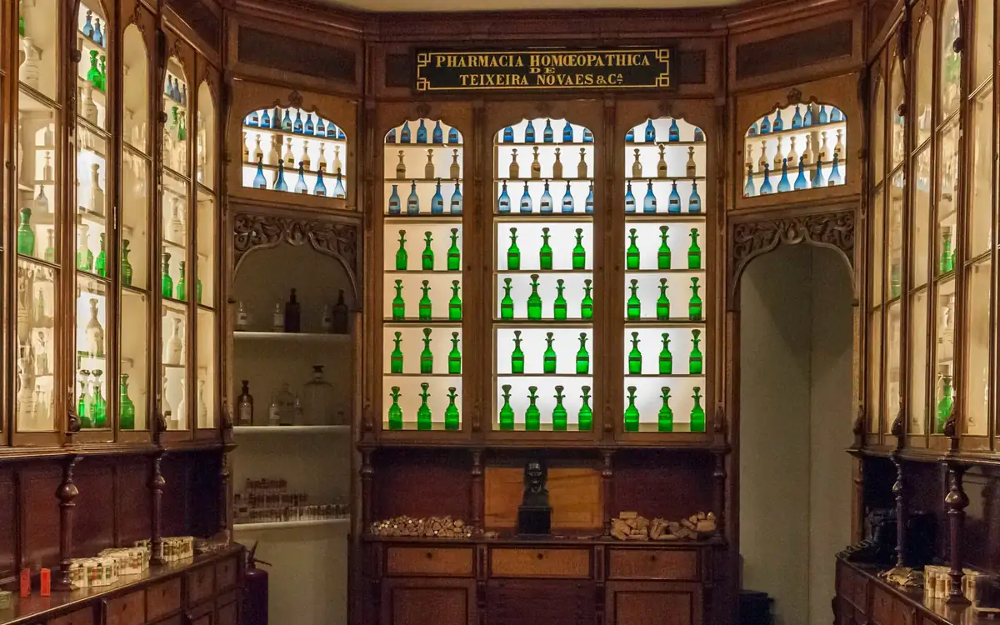
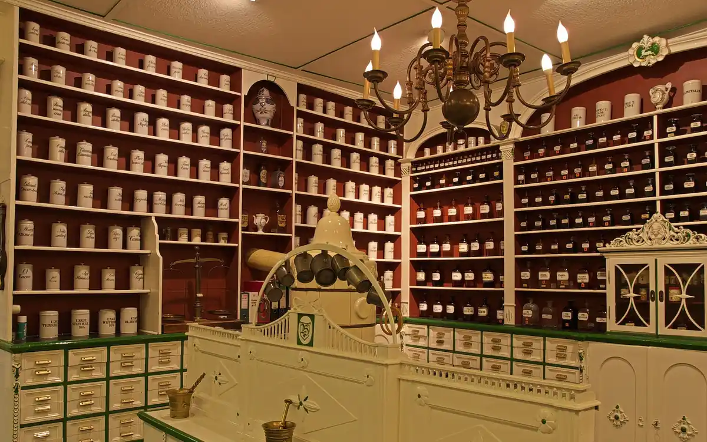
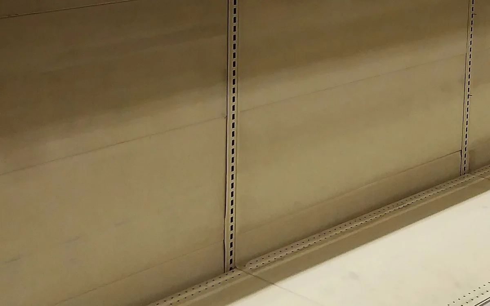

Crédits visuels
Les illustrations du fil « Infos du jour » sont des images de synthèse fabriquées pour JARVIS : objets du métier modélisés puis rendus avec three.js (licence MIT, © les auteurs de three.js, texte de la licence). Aucune photographie n’est utilisée, aucune image tierce n’est reprise.
- Concurrence : caisses et colis de livraison — rendu three.js pour JARVIS — MIT (moteur)
- Concurrence : caisses et colis de livraison — rendu three.js pour JARVIS — MIT (moteur)
- Concurrence : caisses et colis de livraison — rendu three.js pour JARVIS — MIT (moteur)
- Pharmacie en général : mortier, flacon, boîte — rendu three.js pour JARVIS — MIT (moteur)
- Pharmacie en général : mortier, flacon, boîte — rendu three.js pour JARVIS — MIT (moteur)
- Génériques : gélules et plaquette — rendu three.js pour JARVIS — MIT (moteur)

Génériques : gélules et plaquette — rendu three.js pour JARVIS — MIT (moteur)- Marge : pièces empilées, pourcentage — rendu three.js pour JARVIS — MIT (moteur)
- Marge : pièces empilées, pourcentage — rendu three.js pour JARVIS — MIT (moteur)
- Marge : pièces empilées, pourcentage — rendu three.js pour JARVIS — MIT (moteur)
- Officine : croix, vitrine — rendu three.js pour JARVIS — MIT (moteur)

Officine : croix, vitrine — rendu three.js pour JARVIS — MIT (moteur)
Officine : croix, vitrine — rendu three.js pour JARVIS — MIT (moteur)- Rappel de lots : flèche de retour — rendu three.js pour JARVIS — MIT (moteur)
- Rappel de lots : flèche de retour — rendu three.js pour JARVIS — MIT (moteur)
- Remboursement : carte, pièces — rendu three.js pour JARVIS — MIT (moteur)
- Remboursement : carte, pièces — rendu three.js pour JARVIS — MIT (moteur)

Rupture : casier vide, caisse vide — rendu three.js pour JARVIS — MIT (moteur)- Rupture : casier vide, caisse vide — rendu three.js pour JARVIS — MIT (moteur)
- Rupture : casier vide, caisse vide — rendu three.js pour JARVIS — MIT (moteur)